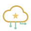

Stela Preparatório AZ-900 Portal de treino
Fac Senac DF
Treino
sem nota
Portal de treino
O Stela Cloud do preparatório: um portal de nuvem de mentirinha, com o nome do Azure ao lado de cada serviço, e as missões do Cerrado Delivery. Sem conta, sem cartão e sem risco.
Simulador para estudo: não é o Azure de verdade. Nada aqui é criado na nuvem e nada é cobrado. Os nomes das telas imitam os do portal do Azure, para você reconhecer o caminho quando usar o de verdade.

Stela Cloud (treino)
Como funciona
O caminho de verdade, sem a conta de verdade
- O Cerrado Delivery é um aplicativo de entrega de comida de Brasília, inventado para o preparatório. Cada aula traz missões novas para ele.
- Os nomes do Stela Cloud são de mentirinha. O nome do serviço no Azure aparece embaixo de cada um: é esse que cai na prova.
- É só treino: sem login e sem nota. O que você faz fica só neste navegador. Recomeçar o portal apaga tudo.
- Quando quiser ver o de verdade, use o Azure for Students ou os exercícios com área restrita do Microsoft Learn.